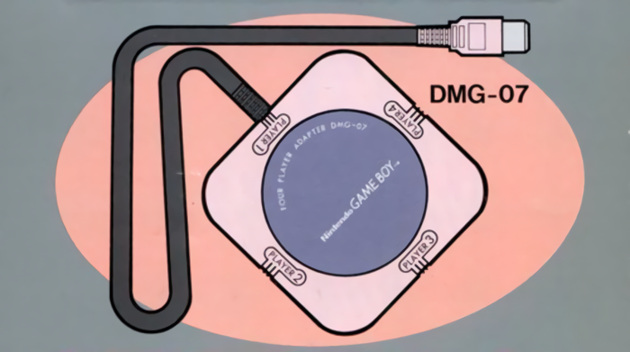
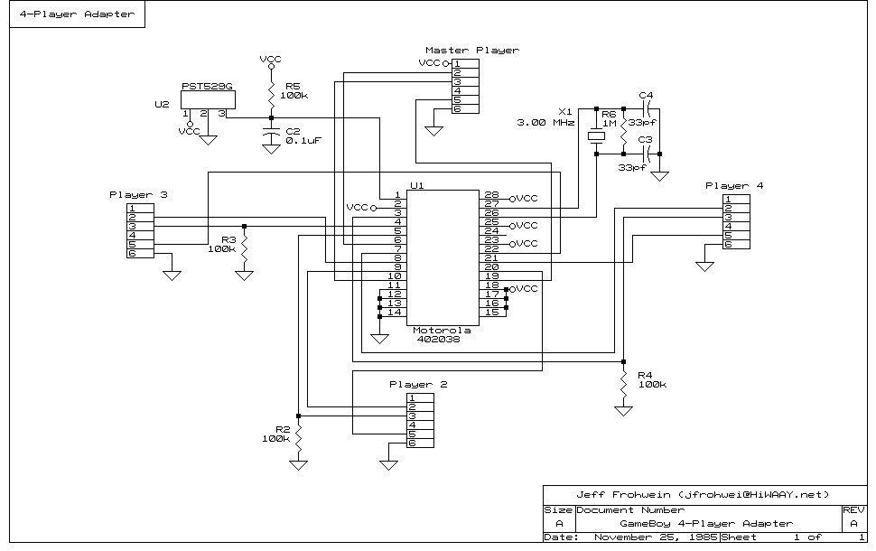

Source: Kathy Kavan
Forsaken technology
Ever since the Game Boy launched, it had multiplayer support via its serial input-output port. By design, however, it was restricted to 2-player modes. The way data transfers through the Link Cable is simply hardwired for bi-directional communication. For many games, 2-player modes make sense, and that much was enough. Even so, a handful of titles, such as racing games, benefit from 3 or 4-player action. The problem here is that the Game Boy can't natively handle connections with that many players. Nintendo came up with a clever solution called the DMG-07, a 4-Player adapter for the original Game Boy. Released in 1990, the adapter came bundled with F-1 Race.
While the DMG-07 worked as intended, only a very limited number of games took advantage of it; a lot of them came from Nintendo themselves in fact. It had virtually no support a few years after its release. The issue was exacerbated by the fact that the DMG-07 typically requires Player 1 to have an original Game Boy (one of the DMG models) unless another adapter is thrown into the mix. The DMG-07 comes with a built-in cable for Player 1, but it's a 1st Generation male connector, meaning it won't fit in any Game Boy Pocket, Game Boy Color, or Game Boy Advance without the MGB-004 converter. Players 2, 3, and 4 can use whatever Game Boy they want with the MGB-010 Universal Link Cable, since the DMG-07 leaves its remaining ports open. The 4-Player adapter was entirely crafted around the old-school Game Boy, and the amount of setup and special cables needed for later Game Boys to connect to the DMG-07 ensured that the accessory was all but forgotten by the mid 90s.
Fast-forward some 27 years later, and not only has the DMG-07 been unlovingly tossed aside by Game Boy developers of the past, but today it's been relegated to the dustbin of gaming history. No one really knows how this little thing actually works, save for some of the old programmers who used it way back when. For the rest of us, it's just another mysterious box. I couldn't find anyone who had detailed how 4-player communications happen inside the adapter, no written documentation on how games took advantage of the DMG-07, nothing. The best information I managed to pull up was an old schematic, but this in truth told me very little about the DMG-07's operation. Perhaps someone more familiar with low-level electronics could make heads or tails of it, but to me it may as well have been written in some alien script. The available data for the Motorola 402038 was utterly sparse and non-descriptive, offering no technical insight beyond the fact that the chip multiplexes data.

Maybe you can read this, but I can't.
All of this led to a very troubling situation: the DMG-07 wasn't emulated in any capacity. If things ultimately continued that way, the 4-player gaming experience of the DMG would eventually be lost. It'd be something people read about in books rather than playing it themselves. Obviously, I can't abide by that, so I set out to conquer the unknown once again. Before beginning the rest of this article, I just want to point out that the DMG-07 isn't a simple piece of hardware. One would suspect that the adapter doesn't do anything fancy to network Game Boys together. Just have something like Player 1 sends a byte, everyone receives it, then Player 2 sends a byte, everyone receives it, Player 3 sends a byte, everyone receives it, so on and so forth, rinse and repeat. Can't be that hard, right? As it turns out, however, the DMG-07 implements a pretty sophisticated protocol that is non-trivial at first glance and required a surprising amount of reverse engineering. It differs greatly from the standard communication between 2 players over the Link Cable.
Getting ready for some four play
Originally, I intended this to be the second article in my Edge of Emulation articles. When I was done with Barcode Taisen Bardigun, I promptly bought a DMG-07, but at the time I didn't have a DMG model for Player 1, just GBCs and GBAs. This affected my progress on the Barcode Boy as well (which requires a DMG to work). Eventually, I obtained a suitable Game Boy to test the DMG-07, yet sadly my research fell behind, as I got distracted with Zok Zok Heroes. Progress continued to lag until I made a couple of breakthroughs. I figured I would have been done back in August, but sometimes delays happen. During that gap, I ordered a couple other pieces of rare and unique Game Boy hardware, but I had to force myself to finish what I started on the DMG-07. On the bright side, I have plenty of new toys for next year. If I can get one in particular emulated, I guarantee it will blow your mind.
Digressing, the DMG-07 itself is a little gray hub with a few ports on each end. As previously said, Player 1 has a built-in cable; Players 2-4 need to supply their own. I imagine Nintendo did that so they could sell more Link Cables. I bought an MGB-010 cable (in addition to the one I already had) and two copies of F-1 Race. For my tests, I used a flashcart to simulate a third copy of the game. I only had 3 Game Boys hooked up instead of 4, but that much was enough to gain information about the DMG-07. As with all my other investigations, I turned to making my own ROM hacks to record data to the flashcart's saved RAM. By examining the traffic going into and out of each Game Boy via the Serial I/O port, I slowly built up an idea of what the DMG-07 was doing and how Game Boys were supposed to interact with it.
When I first opened up the results of my saved RAM, I was quite puzzled by what I saw. I had expected a rather simple protocol where each Game Boy took turns sending bytes back and forth, however, I didn't find anything like that initially. It was very difficult to understand what was going on, so I sampled data from all three Game Boys by switching which one had the flashcart in it. After I gathered more saved RAM, I compared and contrasted Player 1-3 to try to make sense of everything. From the start, it became apparent that the DMG-07 operates in an almost entirely different manner from the ordinary Link Cable. With the complete view of the DMG-07's communications side-by-side, I first noticed that the adapter seemed to be polling or pinging the Game Boys. Each handheld connected to the DMG-07 kept receiving a repeating series of 4 bytes, such as:
0xFE 0x01 0x01 0x01 -- Sent to Player 1
0xFE 0x02 0x02 0x02 -- Sent to Player 2
0xFE 0x03 0x03 0x03 -- Sent to Player 3
Obviously enough, the player's ID had been encoded in this network traffic, and it looked like the first byte 0xFE was some kind of marker or indicator. More interestingly, however, was the fact that these bytes would change whenever one Game Boy selected the multiplayer mode from the game's main menu. For example, Player 1 would receive these various bytes from the DMG-07:
0xFE 0x11 0x11 0x11 -- Sent to Player 1 when Player 1 entered multiplayer mode
0xFE 0x31 0x31 0x31 -- Sent to Player 1 when Player 1 and 2 entered multiplayer mode
0xFE 0x71 0x71 0x71 -- Sent to Player 1 when Player 1, 2, and 3 entered multiplayer mode
The pattern became clear at that point: the upper half of the 3 "status" bytes changed whenever a Game Boy "connected" to a multiplayer session. Bits 4-7 were being set depending on the player. If Player 1, 2, 3, or 4 connected, Bits 4, 5, 6, and 7 were set respectively. After double-checking some things, I was fairly certain I had pinned down the exact nature behind this behavior. The DMG-07 was broadcasting these packets to every attached Game Boy so that each handheld could obtain its player ID, and view the current status of other Game Boys. These special packets are used during the initial setup leading up to multiplayer to determine how the session should be handled, especially for Player 1, the Game Boy acting as the host.
I talk about Game Boys "entering" or "connecting" to a multiplayer session, but what exactly does this mean and how does it happen? While the DMG-07 is sending bytes to every Game Boy, those Game Boys are also sending data back to the adapter. Before multiplayer, each Game Boy sent zeroes to the DMG-07. However, once the player selected and confirmed the multiplayer menu, the game changed what data it pushed to the DMG-07. For F-1 Race, the Game Boys started sending the following 4 bytes in response to the pings:
0x88 0x88 0x28 0x04
Okay, looks completely random... I decided to see what other games sent. I popped Wave Race into the Game Boys, tried again, and got this:
0x88 0x88 0xFF 0x01
And now we're getting somewhere! Evidently the last two bytes did... something, but the first two bytes definitely seemed to act as a sort of acknowledgement signal. As long as those two bytes were 0x88 0x88, the DMG-07 would log that Game Boy as "connected" and change the ping packets as described above. Later testing using actual homebrew software I wrote myself confirmed this. The other two bytes do serve a very important role in the DMG-07's protocol, but at the time I couldn't see it and thought they were just whatever values the game wanted. At any rate, if one of the Game Boys sends any other values besides 0x88 0x88 for the first two bytes, the DMG-07 resets the corresponding bits in the ping packets, thus that Game Boy appears to be disconnected from multiplayer.
Diving into the foursome
The pings only accounted for a small portion of the network traffic on the DMG-07. The rest of the work where Game Boys actually exchanged data comes after that. I dubbed this the "transmission phase" because the DMG-07's actions change from handling pings to shuffling data back and forth to players. Going back to F-1 Race, the data I pulled from the saved RAM files showed a sudden shift where the ping packets disappeared and were replaced with something else:
0xAA 0xAA 0xAA 0xAA -- Sent to the DMG-07 from Player 1
0xCC 0xCC 0xCC 0xCC -- Sent to all Game Boys in response
After that, some random looking data followed, and later on came the data to be shared by all Game Boys. So, it looked as if the master Game Boy, Player 1, sends a bunch of 0xAA bytes, and the DMG-07 replies with a bunch of 0xCC bytes. This seemed to trigger the transmission phase, and again, this was later confirmed by homebrew tests. Moving onto the heart of the protocol, where data gets swapped across the Game Boys, I found sets of 16 bytes that were being sent to all players. Those bytes were also the same ones the Game Boys were sending to the DMG-07. Evidently, each Game Boy transmits some bytes to the DMG-07, then the DMG-07 in turn broadcasts that to every other Game Boy (including the Game Boy that originally pushed the data). Doing a little bit of math, it's easy to see that each Game Boy was responsible for sending 4 bytes of their own. Further investigation showed that the DMG-07 utilized some kind of buffer that needed to be filled before information was transmitted.
The buffering wasn't too hard to figure out. All of the Game Boys sent their 4 bytes simultaneously, and eventually when the buffer was full, the DMG-07 would broadcast Player 1's bytes, then Player 2's, then Player 3's, and finally Player 4's. If no Game Boy were present for Players 2-4, then the DMG-07 would fill the buffer with zeroes. Armed with this much knowledge, I was able to start recreating the DMG-07 through software. After messing around with some C++ code and going back to do more hardware tests, I managed to get F-1 Race working, at least for 2 players. That doesn't sound very exciting, but the bulk of the work involved emulating the protocol correctly rather than handling networking. If I could do it for 2 players, making the jump to 3 or 4 players should have been straightforward.
This chart shows the flow of data and buffering for the DMG-07 (click to enlarge). Note how data from each Game Boy is sent all at once. The rest of the time while the DMG-07 buffers, the handhelds send zeroes.
Before trying to connect 4 instances of GBE+ together, I went ahead and tested other games just to make sure I had the DMG-07 protocol accurately emulated. As it turns out, everything started falling apart once I tried playing Wave Race. Curiously, the first part would work, i.e. the ping phase did just fine. However, when switching to the transmission phase, the game started glitching hardcore. While this proved disappointing, at least I had some idea of where the problem was hiding. Once again, I poured over all the logs from the DMG-07 network, focusing on when data was sent in the transmission phase. Eventually, something odd just clicked with me. Remember those two bytes that I said played a very important role in the protocol, but I had no clue what they really did?
0x88 0x88 0x28 0x04 -- What purpose do these two serve?
0x88 0x88 0xFF 0x01 -- Why do different games send different values?
The very last byte appeared to control the length of the buffer when operating in transmission phase. Previously, I thought that the DMG-07 always took a fixed number of bytes from every Game Boy to fill its buffer, but apparently it can require each system to send 1-255 bytes. Wave Race happens to uses a 4-byte buffer, meaning it takes 1 byte from each Game Boy. In contrast, F-1 Race uses a 16-byte buffer, and it takes 4 bytes per-Game Boy. Changing this specific byte allows games to choose for themselves the best buffer size. Wave Race wouldn't work at first because the buffering was incorrect, causing data to be trasmitted at the wrong times.
Now what about that second to last byte? This one is more obtuse, and I only discovered its function through some off-hand observations while collecting data. That byte controls the speed at which the DMG-07 transfers bytes to other Game Boys. Setting it to 0 runs it as fast as normal Link Cable communications, 1KB per-second. Setting it to 0xFF runs it at ~256 bytes per-second, or one fourth the normal speed. Other values in between shift it closer or further to either end. During my initial research, I took note of how long I left a Game Boy running to capture data and soon noticed that sometimes the incoming values came much slower than I expected. The ping phase, for example, automatically defaults to ~256 bytes per-second, and this was somewhat measureable by doing simple timing tests (counting to 3 and shutting down a Game Boy). Some games rely on the slower link speed to properly run, otherwise they desync or freeze.
Once those two mysteries were solved, everything worked just fine (more or less, some other unrelated bugs affect F-1 Race and Wave Race). A bit more fussing around with the networking code in GBE+, and up to 4 instances could connect with each other. With that, for the first time ever, the DMG-07 had been emulated. As always, here's a video demonstrating what GBE+ can do now in FaceBall 2000. Keep in mind, due to the amount of synchronization going on, the game runs at an incredibly low 6FPS. That can be improved in the future, but for now, I'm very pleased to get it up and running.
It works, but it's currently slow as balls.
For those that know a bit about Game Boy history, FaceBall 2000 is the only Game Boy game to support 16 opponents in a multiplayer session. Many people have sought to recreate this amazing feat, even going so far as to purchase a bunch of Game Boys, Link Cables, and DMG-07s. It's a highly sought-after goal, and now that GBE+ has cracked the 4-Player Adapter, it should be possible to emulate that, right? Right? Well here's where I say not so fast. Turns out there's more to the mythical 16-player mode than most people know. In an interview with Robert Champagne, the main dev behind FaceBall 2000, it was revealed that the original 16-player mode used a special cable developed solely for the game. The idea was to bundle that with FaceBall 2000 so that players could daisy-chain the Game Boys. In the end, that never happened, and instead Nintendo's DMG-07 was used, but only for 4 players max.
This is where a lot of confusion seems to arise. The original 16-player code for FaceBall's custom cable is still inside the published game code. However, that custom cable works differently from both the DMG-07 and the regular Link Cables. So no matter how people fiddle around with a bunch of 4-Player Adapters, they're extremely unlikely to unlock the fabled 16-player deathmatches, unless something glitches. The game detects all three types of cables and changes how it communicates over serial input-output. Each cable operates in a very distinct manner, so you can't really force the DMG-07 to behave like the original one from FaceBall. There's a ton of bad information floating around, even on Wikipedia, but with proper research it's clear that the 16-player mode was never meant for the DMG-07, and the only people who saw any trace of it working were the developers using their own tech. There's nary a mention of the 16-player mode in the game's manual.
Nevertheless, Mr. Champagne graciously left his work intact in every copy of FaceBall 2000. It's not beyond the realm of possibility to reverse engineer the game code and find out how the custom cable worked. Or someone could just get ahold of him and ask. Champagne himself claims they might not have ever even tested FaceBall 2000 with 16 players (lack of staff and Game Boys back then); is this perhaps a chance for emulation to do something the world has never seen? In any case, that's beyond the scope of what I set out to accomplish here. Maybe some other day...
At any rate, all of my research can be found here for anyone interested. While GBE+ is the first emulator to see full DMG-07 support, I hope this little adventure of mine helps other emudevs better understand the hardware. It'd be great to see this implemented in other projects.
Moving forward into 2018
It's almost time to put this year in the rearview mirror. What an insane ride it's been too! The Edge of Emulation series of articles originally started when I got the crazy notion to get GBE+ to run some of the things no one else ever had, to start filling in the holes Game Boy emulation had for decades. What began with Barcode Taisen Bardigun spread to the Barcode Boy, Zok Zok Heroes, and now the DMG-07. So in 2017 alone, I've managed to conquer 4 items from my list of "white whales". Not bad, right? But, if it isn't apparent by now, this is all beginning to take a toll on me. Yes, sadly, I must admit... I'm pretty much addicted to this kind of work now. I really can't stop, not until everything on my list is crossed off. Game Boy emulation is tricky, what with all the add-ons, extensions, and accessories that came out, but I'm ready and willing to tackle them all. We've ignored a lot of these items for too long. It's time to get some serious research and preservation done.
So what exactly does the future look like for me? Just how far does the edge stretch? As I wrote earlier, I purchased a bunch of items while trying to complete my DMG-07 analysis. I don't like to spoil what I have my eyes set on. I also don't want to generate any unnecessary hype in case my efforts take longer than expected. However, I will drop some hints. If everything goes to plan, I'll be emulating elctromagnetic radiation, peeking into downloadable GBC games, supporting some Tamagotchi-like accessories, and even doing a bit of fishing. It's going to be ridiculous, to say the least.
{kind=link}